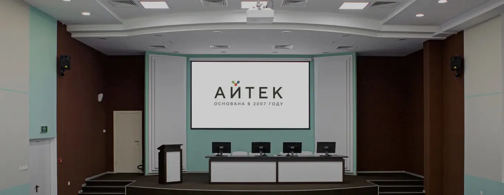

Федеральный исследовательский центр
Апатиты · 60 рабочих дней
Комплексное оснащение конференц-зала в городе Оренбург

Стоимость и срок указаны для этого объекта. Смета нового проекта зависит от помещения, комплектации и состава работ.
На объекте заказчика должен быть реализован комплекс мультимедийного оборудования в виде единой системы аудиовизуального и коммутационного оборудования, совместимого с комплексом средств вычислительной техники для быстрого и удобного доступа к различным информационным ресурсам и их графического отображения. Основной целью создания данного комплекса является возможность проведения различных мероприятий, таких как: проведение мультимедийных презентаций и проведение аудиоконференций.
Специалистами ГК Айтек был успешно завершён проект по комплексному оснащению объекта современным мультимедийным оборудованием под ключ. В ходе реализации проекта был произведён весь спектр работ — от поставки оборудования и разработки проектной документации до финальной отладки систем. Состав реализованного комплекса: Проектор с мощностью светового потока 6000 люмен Проекционный экран 2.59 х 4м с электроприводом Индивидуальные дублирующие мониторы 24" для президиума Интерактивная трибуна для выступлений спикера Звуковые настенные системы Скрытая многоуровневая коммутация
Компания Айтек осуществила комплексную реализацию проекта по оснащению конференц-зала в Перенатальном центре. Силами нашей компании были выполнены все работы по монтажу и пусконаладке оборудования. Основной и главной задачей данного проекта было - установить комплекс аудиовизуального оборудования в сжатые сроки. Основной сложностью, с которой пришлось столкнуться нашим специалистам – это законченные строительно-отделочные работы, в помещении была произведена чистовая уборка, потолки представляли литой конструктив из сплошного гипсокартон. Доступ к подпотолочному пространству был сильно ограничен. Решением данной проблемы послужило установка нескольких технологических люков в пространстве потолка с шагом в 5-7 метров и данные работы были выполнены в течении 2-х дней.
Пространство конференц-зала новой клинической больницы превратилось в полноценный многофункциональный мультимедийный зал, в котором можно провести любые презентации и аудиоконференции. Срок реализации проекта составил 4 дня.
Предназначены для коллективного пользования и наглядного отображения информации всем участникам мероприятия. В состав подсистем графического отображения входят: средства коллективного и индивидуального пользования, средства коммутации, средства преобразования и обработки видеосигналов.
В качестве основного средства отображения информации были задействованы проекционный экран Lumien Large Control с размером рабочего поля 259 x 400 см и лазерный проектор Sony VPL-FHZ65, с мощностью светового потока 6000 люмен. Световой поток такой мощности обеспечит отображение яркой и насыщенной картинки даже в атмосфере искусственного освещения. Одно из основных преимуществ проектора является использование технологии воспроизведения изображения, которое построено на базе лазерных светодиодах. Эта технология обладает очень высоким ресурсом работы и рассчитана на 50 000 часов эксплуатации в режиме 24/7.
Использование этого проектора полностью исключает использование дорогостоящих расходных материалов в отличии от его конкурентов, использующих классические технологии проецировании изображения. Стоит отметить, что по желанию заказчика, для крепления проектора была установлена дополнительная закладная точка для крепления проектора.
Размер проекционного экрана, как и сама ниша под экран, были выбраны исходя из существующих стандартов для конференц-залов, где ширина экрана рассчитывается на основании глубины помещения и формата проекции. Таким образом, полученный угол обзора экрана полностью удовлетворил требования стандартов, изображение было оптимальным как на первых рядах, так и на последних. Основной особенностью экрана является его бесшумный и в тоже время мощный двигатель, который позволяет тихо и в оперативном порядке производить все манипуляции с экраном (поднятие и опуск).
Для того, чтобы члены делегации могли видеть материал для презентаций не оборачиваясь в сторону проекционного экрана, было принято установить дублирующие мониторы Samsung S22E390H на стол для президиума. Специализированные крепления позволяют выбирать любой угол наклона монитора во избежание появления ограничений в области просмотра.
На трибуне для докладчика расположен сенсорный моноблок Sharp LLP202V с размером экрана 20 дюймов. Изображение сенсорного экрана можно также выводить на коллективное и индивидуальные средства видеоотображения, а сенсорный экран позволяет докладчику делать пометки в реальном времени поверх презентаций с помощью специального стилуса.
Предназначено для усиления, воспроизведения и, в случае необходимости, обработки речи выступающих и звукового сигнала вцелом. В состав подсистемы входят: микшерный эквалайзер, комплекс микрофонных пультов для делегатов, активные громкоговорителя, средства для устранения появления “обратной связи”.
Ядром всей системы распределения и обработки звуковых сигналов является многоканальный флагманский микшерный пульт Soundcraft Signature 22MTK.
Основным требованием для акустических систем было – равномерное распределение звукового давления, высокая разборчивость речи и возможность проведения мероприятий в формате конференции в атмосфере гулкого помещения. Проведя необходимые акустические измерительные исследования, инженерами нашей компании было принято установить два активных корпусных громкоговорителя средних и высоких частот Behringer B208D на фронтальной части помещения и два активных корпусных громкоговорителя для сидящих в центре зала. Фронтальные громкоговорители расположись за пределами стола президиума, чтобы не возбуждать, так называемую цикличную связь с микрофонами, сопровождающуюся звонким писком. Подвес и позиционирование акустических систем - самое сложное во всем процессе установки. Отчасти из-за того, что проверить правильность позиционирования акустических систем по механической части возможно только после запуска системы в тесте, финишное позиционирование может отнять много сил и сопряжен с переделкой механической части конструктива. Для монтажа акустических систем использовались оригинальные крепления от компании PROEL. В качестве системы для дополнительной страховки использовались механические анкера с десятикратной нагрузкой за пределами видимой части стен. Установка кронштейнов и закладных под оборудование - осуществляется по заранее созданной схемы расположения точек в проектной документации.
Для усиления речи выступающих делегатов на стол для президиума были установлении четыре конденсаторных микрофона на гусиной шее от компании INVOTONE, с возможностью передачи сигнала по балансному соединению, исключающему какие-либо помехи.
Для усиления речи присутствующих в зале были предусмотрены беспроводные микрофоны от легендарной компании SHURE серии 58.
Подсистема коммутации построена на базе матричного коммутатора Kramer VS-88UHDA и предназначена для бесподрывного распределения видеосигналов от источников к средствам отображения.
Сердцем всей системы управления стал центральный процессор Kramer SL-240C. Процессор Kramer позволяет осуществлять управления всей системой с помощью одного устройства (планшет или стационарный компьютер). Отличительной особенностью процессора является наличие большого количества различных соединительных интерфейсов – RS232, RS485, IK, IP, dry contact, триггерное управление 12В и многое другое. Стоит отметить, для Заказчика был разработан индивидуальный графический интерфейс для системы управления, который позволит справиться с всем комплексом оборудования даже не подготовленному сотруднику.
В условиях законченного ремонта специалисты нашей компании произвели аккуратную установку и монтаж всего оборудования.
В бриф перейдут выбранный проект, тип помещения и бюджет примера. Все параметры можно изменить.